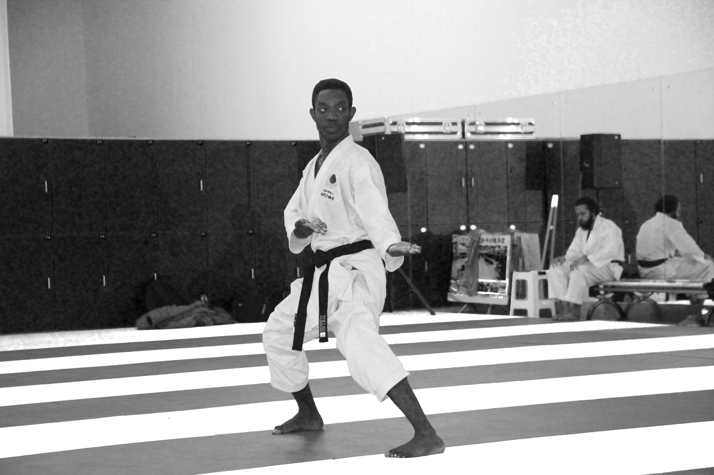
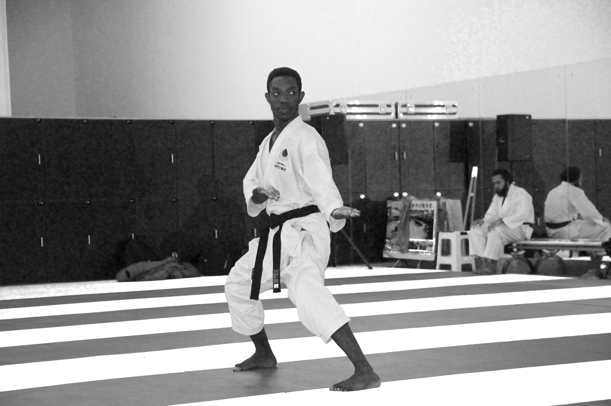

My name is Ulysse Karasira Sibo.I am Rwandan.I began karate at the age of ten.I was inspired by Jean Claude Van Damme's film "The Blood Sport". That is where my motivation to practice karate stemmed from.My first instructor was Twajamahoro Sylvestre, who trained us at the TIGER KARATE dojo.He taught me many katas, kihon, and kumite techniques. I practiced a number of katas from various karate systems.Examples include Shotokan, Wadoryu, and Shito-ryu.In 2012, I was given a black belt and recruited to the Rwandan national team.I specialized in katas. In 2014, I traveled to study in China.When I went to Beijing in 2015, I visited the JKA dojo there.I met Roi Sensei and Sinouichi Sensei.They taught me the basics of JKA karate. That is how I used my karate experience to distinguish between sport karate and traditional karate.I cannot thank enough Kirita sensei, Nabeya sensei, Fukushima Sensei and Hamada Sensei who supported me during my journey to learn JKA karate.